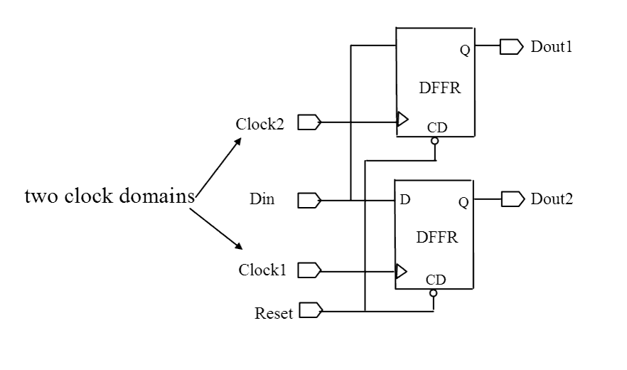

| Description | Limit as much as possible the number of clock domains in the design. Multiple clock domains can cause metastability and complicate timing analysis, scan insertion, and clock tree synthesis. If multiple clock domains must be used, you can configure this rule using the rule_set_parameter Tcl command and the NB_MAX_CLOCKS parameter to specify the acceptable number of clock domains. For example:
leda> rule_set_parameter -rule NTL_CLK01 \
-parameter NB_MAX_CLOCKS -value {2}
|
| Policy | DESIGN |
| Ruleset | CLOCKS |
| Language | VHDL/Verilog |
| Type | Hardware |
| Severity | Error |
This is an example of invalid Verilog code, followed by a circuit diagram that illustrates the problem:
module ntl_clk01_top (Clock1, Clock2, Reset, Din1, Din2, Dout1, Dout2); input Clock1, Clock2, Reset, Din1, Din2; output Dout1, Dout2; wire Dout1, Dout2; //DFFR -- flip-flop with reset DFFR I0(.D(Din), .CP(Clock1), .CD(Reset), .Q(Dout1)); // OK -- one clock domain DFFR I1(.D(Din), .CP(Clock2), .CD(Reset), .Q(Dout2)); // NTL_CLK01 fires -- another clock domain endmodule